左手按弦與進階技法
第 15 章・建議學習 1.5 小時
Advanced Left-Hand Technique
（進階左手技法）
本章重點
- 有琴格不代表「按對格子就好」。真正的音樂由壓力、按弦位置、音符開始與結束的時間、換把路徑、左右手同步決定。
- 按弦需要的力量，通常比你想的少得多。
- 換把的重點不是起點與終點，而是到達的時間。
- 揉弦（vibrato）在曼陀林上的效果比小提琴克制，不該當成「所有長音的預設裝飾」。
- 泛音只需要「輕觸節點」，不是把弦壓下去。
曼陀林有琴格，常讓人誤以為左手只要「按對格子」就結束了。
事實上，琴格只是把音高位置離散化（變成一個個格子）。真正的音樂仍由這些東西決定：
- 壓力
- 按弦位置
- 音符開始與結束的時間
- 換把路徑
- 左右手同步
十九世紀的教本，已經把把位、延伸、裝飾音與雙音放進完整的訓練系統。
這顯示曼陀林的左手，從很早就超越了「第一把位的簡單按弦」。〔S1501〕〔S1502〕
本章的核心原則只有一句：
越少多餘的力量，越能留下速度與表情的空間。
所有技巧都應該建立在同一組基礎上。這些技巧包括：
- 擊弦（hammer-on）
- 勾弦（pull-off）
- 滑音（slide）
- 顫音裝飾（trill）
- 揉弦（vibrato）
- 雙音（double stop）
- 泛音（harmonics）
而那組基礎只有三句話：
- 手腕可以呼吸。
- 拇指不鎖死。
- 手指能迅速釋放。
15.1 按弦位置、壓力與時機
位置：靠近琴格，但不要壓在琴格上
按弦時，指尖通常落在目標琴格後方、靠近琴格的位置。
| 位置 | 結果 |
|---|---|
| 靠近琴格 | 用較小的力量就能讓弦穩定接觸 |
| 距離琴格太遠 | 弦在兩個琴格之間可振動的段落較長，更容易打弦（buzz） |
對雙弦的弦組（course）而言，兩根弦都必須同時被壓實。
因此手指的角度也要調整，避免只壓到其中一根。
時機：壓力「什麼時候來」和「多大」一樣重要
如果手指在右手撥擊之前很久就用力按住，速度快時會累積不必要的緊張。
太晚，則會出現空弦音或雜音。
練習步驟：
- 用極慢的八分音符。
- 在每次撥弦前一瞬間完成按弦。
- 音符結束時，立刻釋放到「仍然接觸、但不再壓弦」的程度。
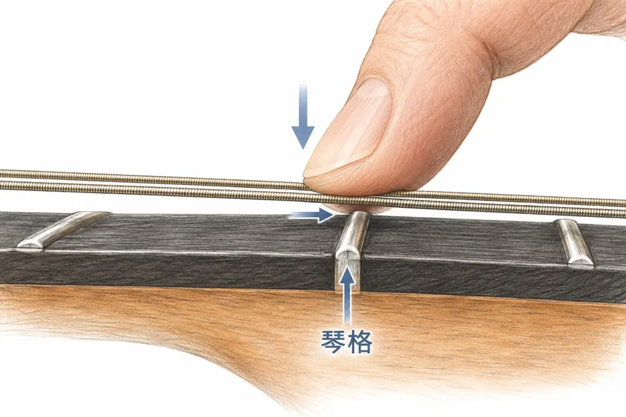
圖解 15.1 按弦位置 壓力與時機（示意）
不同琴，手感不同
以下因素會讓「需要多少壓力」改變：
- 弦高（action）較高
- 弦較粗
- 琴格較低
所以某位老師在自己琴上的「輕輕按」，不一定等於你琴上的實際力量。
技術判斷要和第 11 章的設定（setup）診斷連起來看。
本節重點： 靠近琴格、時機準確，就能用最小的力氣。
練習方向： 安排左手指法與換把。
15.2 手指分配與樂句準備
一指一格：只是起點
初學者常用「一指一格」的概念：
| 手指 | 負責的琴格 |
|---|---|
| 食指 | 第 1 格 |
| 中指 | 第 2 格 |
| 無名指 | 第 3 格 |
| 小指 | 第 4 格 |
對標準音階來說，這是很好的起點。
但真正的曲目會因為半音、把位、和弦與音色需求，改變手指的分配（finger assignment）。
專業指法的核心是：整句能不能保持連續，並避免不必要的大跳。
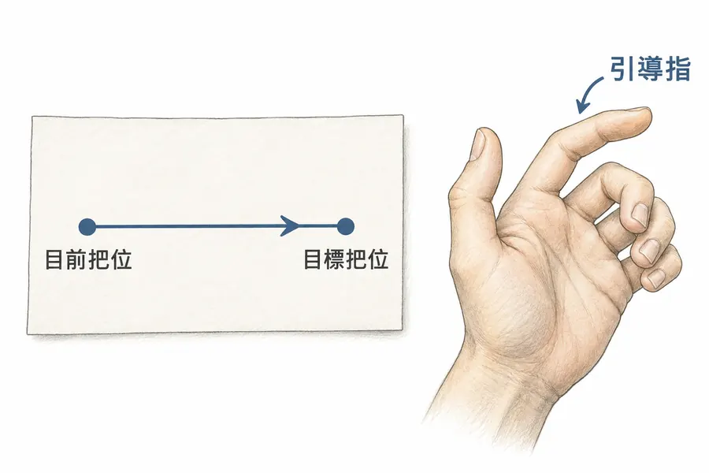
圖解 15.2 手指分配與樂句準備（示意）
保留手指（finger retention）
這是個重要概念：如果某個音稍後還會用到，而保留它不會造成緊張，就可以暫時不抬起。
好處是：
- 有助於雙音。
- 有助於琶音。
- 有助於連續音階。
但相反地，所有手指一直貼著指板，也會限制速度。
真正需要的能力是判斷：哪些音值得保留、哪些要提前放鬆。
從句尾往前推
最好的指法，往往是從句尾往前推出來的。
先找下一個高點、和弦或換弦的需求，再決定前面哪裡換把。
這比從第一個音一路「順手按」可靠得多。
本節重點： 指法服務整句，不是服務單一音符。
練習方向： 安排左手指法與換把。
15.3 換把
換把（shift）的核心是到達時間。
很多人只注意起點與終點，忽略了「中間的移動其實也有節奏」。
假設一段旋律要從第 3 格跳到第 10 格，左手有兩種做法：
- 前一個音結束後立即移動。
- 利用滑音形成表情。
不同做法會直接影響樂句的呼吸（phrasing）。
導引指（guide finger）
導引指可以減少「空間上的不確定感」。做法是：
- 某根手指釋放按弦壓力。
- 但仍輕觸著弦。
- 沿著弦滑到新位置。
- 再重新壓下。
這是在建立路徑感。
高速換把時，導引指可能只保留極輕的接觸，甚至完全離弦。
但身體仍應該知道「要沿哪一條線移動」。
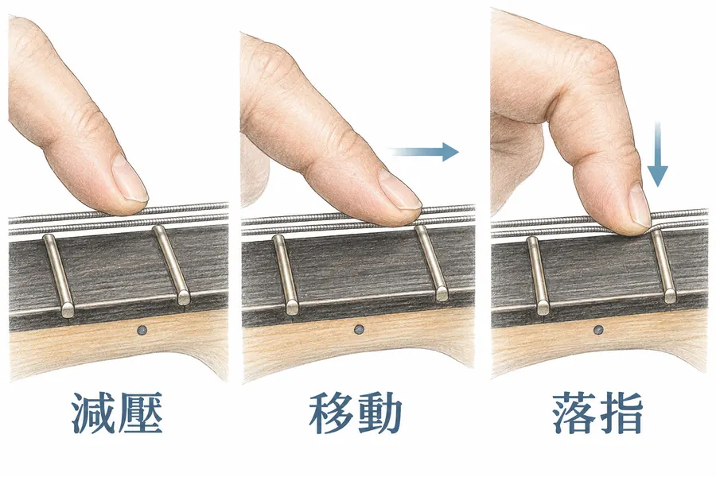
圖解 15.3 換把（示意）
把移動排進拍點裡
練習時可以固定節拍器，把「移動本身」安排在特定的細分上：
- 四分音符的長音持續到第 3 拍結束。
- 在第 4 拍完成換把。
- 第 1 拍落在新音上。
穩定之後，再縮短移動的時間。
這比「無節奏地來回滑十次」更容易建立可重複的動作。
15.4 手指伸展
標準曼陀林的弦長（scale）較短，第一把位常常用四根手指就能涵蓋多個音。
但某些調性與半音階段落（chromatic passage），需要向前或向後的延伸（extension）。
伸展的原則是：以單一手指的局部移動為主，手掌維持自然形狀。
通常是讓某一根手指超出目前的位置，其他手指仍維持參考。
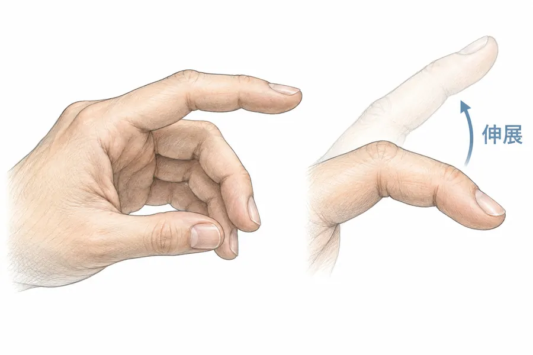
圖解 15.4 手指伸展（示意）
手小的人可以更早換把
手小的演奏者可以更早換把，用換把來維持自然的手形。
這也是為什麼「標準指法」只能當起點。
如果換把不會破壞連奏（legato），用移動換取較自然的手形，往往更健康。
大琴的伸展成本高得多
家族裡體型較大的樂器，弦長明顯更長，伸展的成本也明顯增加。
這些樂器包括：
- 曼陀拉（mandola）
- 八度曼陀林（octave mandolin）
- 曼陀林琴（mandocello）
把標準曼陀林的一指一格與大跨度直接搬過去，可能造成過度伸展。
編排指法時，應該重新考慮把位，依新樂器的弦長來安排手指。
本節重點： 伸展是局部動作，不是整個手掌拉開。
練習方向： 安排左手指法與換把。
15.5 擊弦與勾弦
擊弦（Hammer-on）
做法是：左手手指快速落下，讓琴弦獲得新的振動節點，同時保持足夠的能量。
聲音太弱時，常見原因有三個：
- 落點離琴格太遠。
- 手指的行程太大。
- 前一個音本來就缺乏能量。
有效的擊弦，靠的是快速、短距離的手指動作，不是大力。
勾弦（Pull-off）
勾弦不是把手指垂直抬起。
如果只向上離開，音量可能不足。
通常需要帶一點橫向的釋放，像輕輕撥動琴弦。
但動作太大，會讓音高彎掉，或碰到其他弦組。
在雙弦的弦組上，還要確定兩根弦都被一致地釋放。
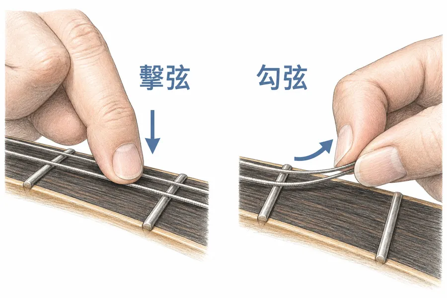
圖解 15.5 擊弦與勾弦（示意）
常見誤解
「擊弦要用力搥下去。」
不對。真正需要的是速度與短距離。用力只會讓手指變慢、變緊。
要放進節拍裡
練習時要把擊弦／勾弦放在節拍裡。
例如：四個十六分音符中，只有第一個音用右手起音，其餘三個用左手完成。
如果節拍開始拖，表示左手的裝飾技法還沒有真正成為「節奏語言」。
本節重點： 左手發的音，也要有節奏。
練習方向： 安排左手指法與換把。
15.6 滑音與滑奏
滑音（slide）有兩種完全不同的用途：
| 用途 | 要求 |
|---|---|
| 只是為了換把 | 應盡量安靜 |
| 故意讓中間的音高被聽見 | 這是表情手段 |
如果兩者不區分，演奏者可能在所有換把時都留下滑音。
久而久之，這會變成一個不必要的風格標記。
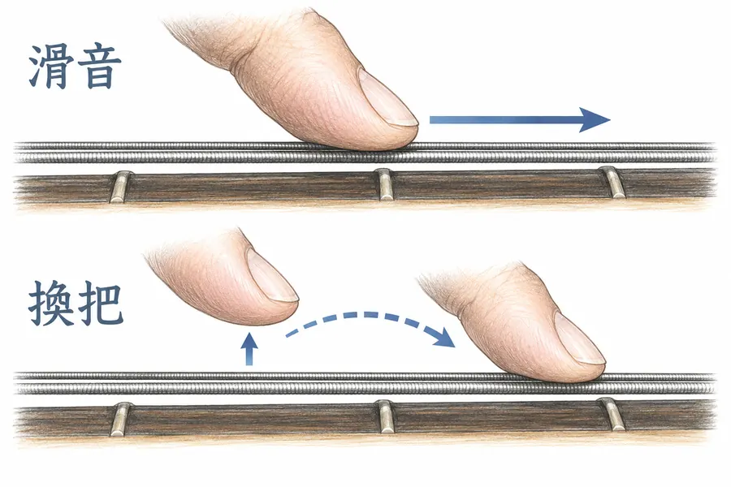
圖解 15.6 滑音與滑奏（示意）
滑奏（glissando）在有格樂器上
有格樂器（fretted instrument）的滑奏，是手指跨過一連串琴格，聽到的是階梯式的變化。
會改變效果的因素有：
- 速度
- 壓力
- 右手是否重新發音
古典曲目中的 portamento（滑音唱法）、民謠的 slide、藍調風格的 slide，可能使用類似的物理動作。
但這三者的語法不同。
雙音滑音更難
雙音滑音要特別注意兩根手指的壓力與距離是否同步。
如果其中一根手指先到，新的和聲會短暫錯位。
慢速錄音是最好的檢查工具。
本節重點： 先決定「這次滑音要不要被聽見」。
練習方向： 安排左手指法與換把。
15.7 顫音裝飾與倚音
顫音裝飾（Trill）
顫音裝飾是主音與鄰音快速交替。
最容易出現的問題是：起音之後越彈越快，最後無法準時落回主音。
練習時應該先限定次數：
- 一拍內 4 次。
- 一拍內 6 次。
- 一拍內 8 次。
之後再逐步增加自由度。
這能讓顫音裝飾保有拍點，讓裝飾音與主拍保持一致。
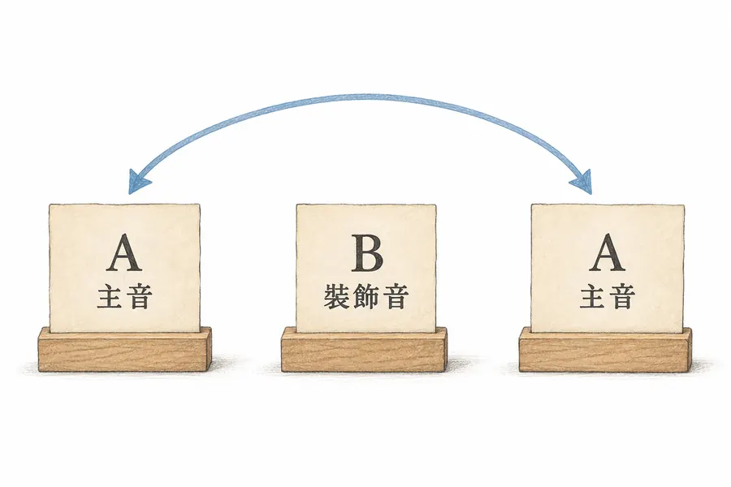
圖解 15.7 顫音裝飾與倚音（示意）
倚音（Grace note）
倚音的長度與落拍位置，依風格而異。
| 風格 | 慣例 |
|---|---|
| 古典裝飾音 | 有自己的時間規則 |
| 愛爾蘭的 cut／裝飾 | 又有另一套 |
| 藍草的滑進（slide-in） | 也不同 |
讀譜時要同時看三件事：年代、作曲家、版本編輯慣例。
歷史方法提供的，是某一個時代的技術證據。
適用範圍應該和曲目年代、風格一起確認。
學習者可以把 Calace、Munier 的裝飾法，視為古典傳統的重要座標。
然後再與實際曲目、實際錄音比較。〔S1501〕〔S1502〕
本節重點： 裝飾音也要有拍點。
練習方向： 安排左手指法與換把。
15.8 揉弦
曼陀林的揉弦，和小提琴不一樣
在小提琴上，手指沿弦長方向搖動，可以連續改變有效弦長。
但在有琴格的曼陀林上，琴格固定了發音的終點。
所以同樣的動作，不會產生同樣幅度的音高變化（pitch modulation）。
曼陀林的揉弦（vibrato）通常依靠：
- 沿弦方向的微小摩擦
- 壓力變化
- 輕微的橫向推弦（lateral bending）
效果比無格弦樂器克制得多。
常見誤解
「揉弦就是學小提琴那樣大力搖。」
在曼陀林上做不到，也不該硬做。這裡的揉弦是「細微的音色與音高變化」。
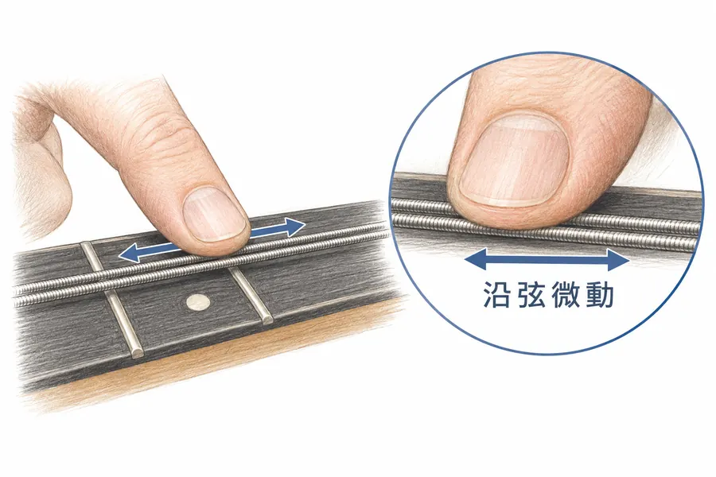
圖解 15.8 揉弦（示意）
不是每個長音都需要
因為效果克制，揉弦不適合當成「讓所有長音更美」的預設。
| 場合 | 適合度 |
|---|---|
| 某些古典的歌唱性段落、慢歌 | 可以使用 |
| 快速的民謠旋律 | 過度使用不合適 |
| 藍草的獨奏段（break） | 過度使用不合適 |
| 歷史風格演奏 | 過度使用不合適 |
先決定音樂需不需要，再決定動作。
用錄音檢查
練習時可錄長音，比較三種版本：
- 完全沒有揉弦。
- 慢的揉弦。
- 快的揉弦。
| 聽到的結果 | 判斷 |
|---|---|
| 音高像吉他推弦（bend）一樣上下大幅擺動 | 幅度可能過大 |
| 完全聽不出差異 | 可能只是手在晃，沒有真正影響到弦 |
本節重點： 曼陀林的揉弦是「細微」，不是「大幅」。
練習方向： 安排左手指法與換把。
15.9 雙音
雙音（double stop）是和聲在指板上的基本組合。
| 音程 | 作用 |
|---|---|
| 三度 | 能直接顯示大調（major）或小調（minor） |
| 六度 | 常帶來較開闊的聲響 |
| 八度 | 可以加厚旋律，但不改變和聲功能 |
學習雙音最好的方法，是沿著音階 harmonize（把音階的每個音都加上另一個音）。
這樣做能把「音程關係」與「指型」連在一起。
為什麼要理解，而不是只背形狀
以 G 大調音階為例，每個音上方加三度，會得到：
| 下方音 | 上方三度 | 三度種類 |
|---|---|---|
| G | B | 大三度 |
| A | C | 小三度 |
| B | D | 小三度 |
大／小三度會依調內音自動變化。
理解這個規律之後，移到 D 調、A 調或其他調，就能重新推導。
只背形狀，容易在跨調時失去方向。
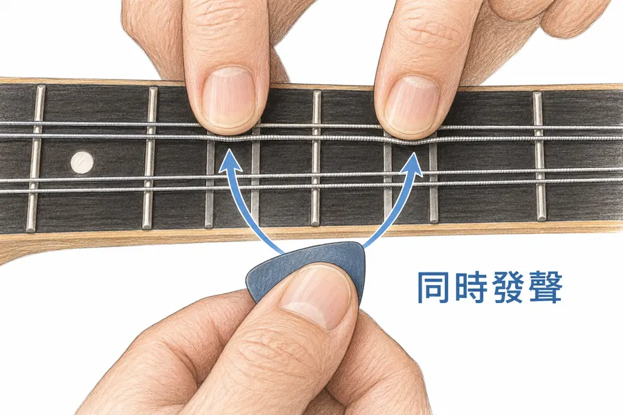
圖解 15.9 雙音（示意）
右手也會影響雙音
兩個弦組必須一起被撥到。
而左手要讓四根實體弦都乾淨發音。
如果有一根弦打弦（buzz），聲音會產生奇怪的拍頻（beating），常被誤以為是調音（tuning）問題。
本節重點： 沿音階練習，比背形狀可靠。
練習方向： 安排左手指法與換把。
15.10 泛音
自然泛音（Natural harmonics）
自然泛音在弦的整數分割點形成。
| 位置 | 弦長比例 | 產生的音高 |
|---|---|---|
| 第 12 格附近 | 1/2 | 高一個八度 |
| 第 7 格附近 | 1/3 | 高十二度 |
| 第 5 格附近 | 1/4 | 高兩個八度 |
演奏時，手指只輕觸節點，不把弦壓到琴格。
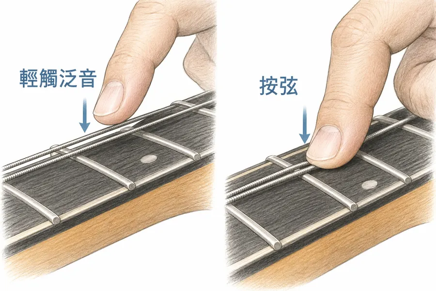
圖解 15.10 泛音（示意）
常見誤解
「泛音要把弦按緊。」
剛好相反。按緊就變成普通的音，不是泛音了。
雙弦的泛音更難
雙弦弦組的泛音，要求兩根弦都在節點附近被輕觸。
所以手指的接觸面與角度必須一致。
順便檢查琴橋位置
自然泛音也可以用來快速檢查琴橋的位置。
第 12 格的泛音與按第 12 格實音的差異，是第 11 章音準（intonation）診斷的重要基準之一。
人工泛音（Artificial harmonics）
人工泛音需要一手按實音、另一手建立新的節點並發音。
對曼陀林而言，協調難度比較高。
它是一種色彩性的技法。
在基礎的自然泛音與音準概念還沒穩定之前，不應該急著追求。
本節重點： 輕觸，不壓下。
練習方向： 安排左手指法與換把。
15.11 左右手同步
高速演奏最常見的問題是：
- 右手已經撥下一個音，左手還沒到。
- 或左手太早抬起，出現短暫的空弦音（open string）。
這種同步誤差，在曼陀林清楚的起音下特別容易被聽見。
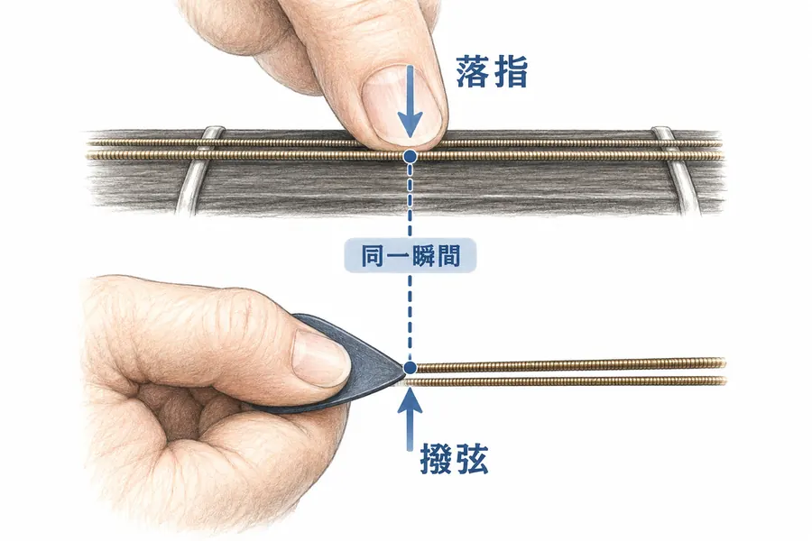
圖解 15.11 左右手同步（示意）
解法：把「轉換」放大
- 例如兩個音 E–F# 反覆，只練「右手撥弦」與「左手落指」的同一瞬間。
- 接著練 F# 結束、下一個音開始的釋放。
音符結束的時間，決定了連奏、斷奏（staccato）與樂句的清晰度。
用慢速播放錄音
錄音時可以降低速度播放，聽聽看有沒有出現：
- 細小的「空隙」。
- 不該有的空弦雜音（open-string blip）。
這些在現場演奏時，通常很難靠手感察覺。
本節重點： 同步問題要「放大」才看得見。
練習方向： 安排左手指法與換把。
15.12 案例：高把位旋律的指法
假設一段旋律要從第一把位一路升到 E6。有兩種做法：
| 做法 | 做法說明 | 優點 | 缺點 |
|---|---|---|---|
| A | 最後才一次跳到高把位 | 移動次數少 | 把最大的換把放在最緊張的快速節點 |
| B | 在前一個長音時提前換把 | 利用音樂空間分散難度 | 移動次數多 |
A 看起來「少移動」，其實是把風險集中在最糟的地方。
B 看起來「多移動」，其實是把風險分散到安全的位置。
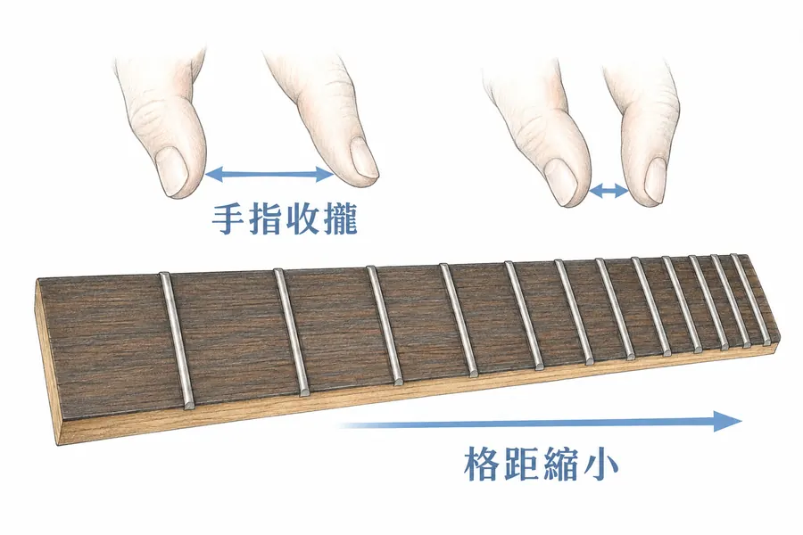
圖解 15.12 案例 高把位旋律的指法（示意）
比較指法要看三件事
- 距離。
- 準備時間。
- 落點。
真正要比較的是：每一次換把有多少準備時間？能不能用導引指？換把之後哪一根手指要立刻工作？
專業的指法常看起來比較複雜。實際上是把風險放到更安全的位置。
練習方法
為同一段做兩套指法，用相同的 BPM 錄下來，比較：
- 成功率
- 音色
- 樂句的連續性
依這三項選擇指法，並把譜上的指法當作參考，而不是規定。
表 15-1｜左手技法與最重要的檢查點
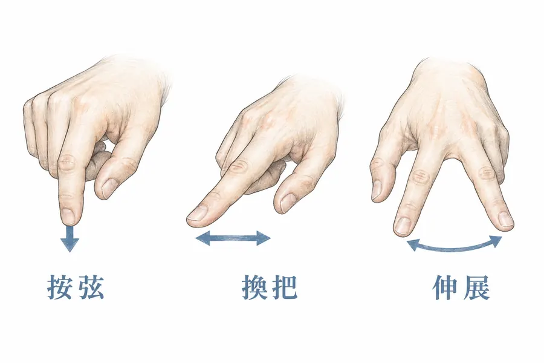
| 技法 | 真正要控制 | 最常見誤區 | 練習焦點 |
|---|---|---|---|
| 按弦 | 最低必要壓力與琴格後位置 | 「越用力越乾淨」 | 逐步減壓至打弦再加回 |
| Shift（換把） | 到達時間與路徑 | 只看起點與終點 | 把移動安排進拍點 |
| Hammer／Pull（擊弦／勾弦） | 左手發音仍有節奏 | 只追音量 | 固定細分 |
| Vibrato（揉弦） | 細微的音高／色彩變化 | 照搬小提琴的大幅搖動 | 錄音比較幅度 |
| Double stop（雙音） | 兩聲部的音程與四根弦的發音 | 只背形狀 | 沿音階 harmonize |
圖解 表 15-1｜左手技法與最重要的檢查點（示意）
自我學習題庫

學習檢查：作答、核對、複習
先自己作答，再看答案。答錯時回到本章相關小節重新讀一次。
1. 換把時 guide finger 的作用之一是？
-
A. 提供移動路徑感
-
B. 增加琴弦張力
-
C. 降低琴橋
-
D. 改變調性
2. Hammer-on 聲音太弱時，應先檢查？
-
A. 落點與動作效率
-
B. 琴盒材質
-
C. 品牌年份
-
D. 背帶長度
3. 高速同步問題常發生在？
-
A. 左右手發音時間沒有對齊
-
B. 木材顏色不同
-
C. 琴盒太大
-
D. 音孔太圓
答案：1.A 2.A 3.A
本章主要查證來源

查證來源：找原文、核條件、留紀錄
【S1501】Raffaele Calace：Metodo per mandolino, Opp.37–42。 換把、裝飾、雙音與左手技法歷史方法。
https://imslp.org/wiki/Metodo_per_mandolino_(Calace%2C_Raffaele)
【S1502】Carlo Munier：Scuola del Mandolino / Metodo completo per la divisione。 位置、裝飾與技巧訓練歷史來源。
https://imslp.org/wiki/Metodo_completo_per_la_divisione_(Munier%2C_Carlo)